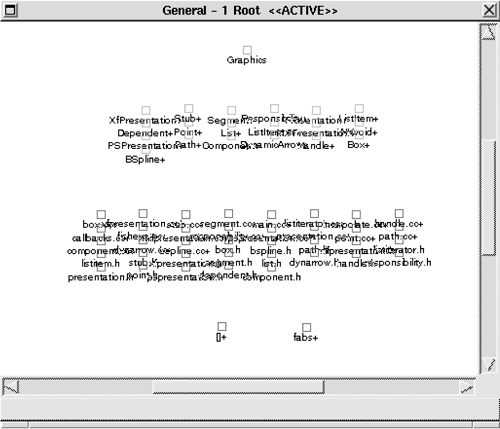
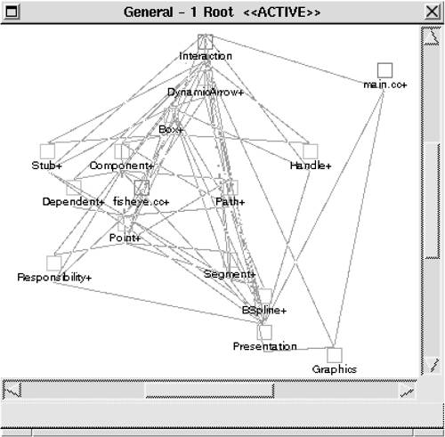

| [ Team LiB ] |
|
10.6 ExampleTo illustrate the process of reconstruction, we will walk through a typical set of code segments created in Dali to reconstruct the architecture for UCMEdit, a system for creating and editing Buhr-style use case maps. We will show how the reconstructor moved from the raw data of a set of extracted views to a simple, elegant picture of the software architecture. INFORMATION EXTRACTIONTable 10.2 shows the elements and relations initially extracted from the UCMEdit source code. Variable accesses are not included; that is, there are no function_reads_variable or function_assigns_variable relations. However, since these relations might be important for determining architectural coupling, a second extraction is engineered to capture them. Additionally, file depends_on file relations are extracted by processing the output from running the GNU make utility on the application's makefile.
Once the views of interest are extracted, functions thought to be "uninteresting" are filtered out, among them built-in functions, such as return, and standard C library functions, such as scanf and printf. DATABASE CONSTRUCTIONNext, an SQL database is populated with the extracted relations. As mentioned in Section 10.3, two additional database tables are constructed to catalog the elements and relationships—one identifies all defined elements; the other lists all identified relation types. The elements table has a field (called type) that stores the element's type (file, function, etc.). VIEW FUSION AND RECONSTRUCTIONFigure 10.13 shows the raw extracted model of those elements and relations, containing 830 nodes and 2,507 relations. At this point, the first order of business is to begin applying code segments to search for order within the chaos. Figure 10.13. A raw set of extracted elements and relations: white noiseA reliable first step is to aggregate a function and all of the local variables that it defines into a new composite element. After the code segment shown in Figure 10.9 is applied, the models for UCMEdit still appear as an inscrutable web of nodes and arcs, but it is simpler than the extracted views of Figure 10.13 prior to the application of the function aggregation code segments. The UCMEdit model now shows 710 nodes and 2,321 relations. We know that UCMEdit is an object-oriented system, and the next low-level code segment applied takes advantage of that knowledge. Similar in nature to that for collapsing functions, this code segment collapses together classes and their member variables and functions, representing them as a single class node. The resulting model was shown in Figure 10.5; it contains 233 nodes and 518 arcs—a significant visual simplification, although still not tractable. But there are still many elements remaining that are unrelated to any extracted class. Hence, we have exposed either a deficiency in the extractors applied or ways in which these systems deviate from pure object-oriented design. In fact, both of these cases obtain. Closer examination reveals that false positives are generated by the extraction code segments in the form of apparent calls to global functions that are actually calls to member functions. Moreover, several functions are indeed global, belonging to no class defined in the system. Of course, some global functions, in the form of system calls or windowing system primitives, are necessary. How these "leftover" cases are separated from the rest of the architecture is discussed next. The model for UCMEdit is now a collection of files, classes, leftover functions, and global variables. Local variables have been aggregated into the functions in which they are defined, and member functions and member variables have been aggregated into their associated classes. At this point we can compose global variables and functions into the files in which they are defined, in much the same manner as functions and classes were composed. The resulting models, shown in Figure 10.14, contain three separate groups of elements: files, classes, and the remaining leftover functions. Again, a significant visual improvement but still not tractable. Figure 10.14. The UCMEdit model showing (from top to bottom) classes, files, and "leftover" functions (arcs are hidden)Until now, each code segment applied has been application independent but specific to the extraction techniques and to the domain of C++ software. The next code segment sets to be applied use expert knowledge of the UCMEdit architecture. Here the reconstruction process diverges from a rote analysis, where we apply off-the-shelf code segments, into opportunistic pattern recognition and definition, leveraging the kinds of information that a designer or experienced system programmer should know about a specific system's architecture. The first application-specific knowledge that we apply to our sample system is as follows:
These observations lead us to expect architectural patterns—the existence of subsystems, perhaps, or certain patterns of interaction. These expectations are in effect hypotheses, and to test them we check for the existence of the patterns. If the result simplifies the picture and matches our expectations, then our hypothesis is confirmed. We have likely discovered what the architect had in mind. Even if not, we have discovered a reasonable and useful handle with which to understand the system. In the code segments shown in Figure 10.15, which are intended to identify the graphics subsystem, those external functions provide rendering and interaction functionality to the application. Consider the first code segment: It constructs a new table from the elements table by filtering out all functions that are members of classes (those that appear as the tDefines field in a tuple of the defines_fn relation). Then it selects from this new table all functions called by functions defined by subclasses of the Presentation class. Note that this code segment references subclasses of Presentation. In doing so, it implicitly identifies the layer that the original designers created to encapsulate accesses to the graphics subsystem. This information will be leveraged further. The second, third, and fourth code segments in this sequence identify functions defined by the Mesa, XForms, and Xlib libraries, respectively, by specifying code segments over the function names. Figure 10.15 Code segments for the UCMEdit graphics subsystem
# 1: Identify calls from graphics access layer.
DROP TABLE tmp;
SELECT * INTO TABLE tmp
FROM elements;
DELETE FROM tmp
WHERE tmp.tName=defines_fn.tDefines;
SELECT t1.tName
FROM tmp t1, calls c1, defines_fn d1,
has_subclass s1, has_subclass s2
WHERE t1.tName=c1.tCallee AND c1.tCaller=d1.tDefines
AND d1.tDefined_by=s1.tSubclass
AND s1.tSuperclass='Presentation';
print "Graphics $fields[0]+ null\n";
# 2: Identify calls to Mesa functions.
SELECT tName
FROM elements
WHERE tType='Function' AND tName LIKE 'gl%';
print "Graphics $fields[0]+ null\n";
# 3: Identify calls to XForms functions.
SELECT tName
FROM elements
WHERE tType='Function' AND tName LIKE 'fl_%';
print "Graphics $fields[0]+ null\n";
# 4: Identify calls to Xlib functions.
DROP TABLE tmp;
SELECT * INTO TABLE tmp
FROM elements;
DELETE FROM tmp
WHERE tmp.tName=defines_fn.tDefines;
SELECT c1.tName
FROM tmp c1
WHERE tType='Function'
AND tName LIKE 'X%';
print "Graphics $fields[0]+ null\n";
Code segments 2, 3, and 4 collectively identify an architectural element, Graphics, which does not exist in the extracted information but does exist in the as-designed architecture. This is an example of relating the as-implemented and as-designed architectures through a cumulative series of code segment applications. The results, in UCMEdit model, are shown in Figure 10.16. Figure 10.16. UCMEdit model showing the graphics subsystem, classes, files, and remaining functions (arcs are hidden) Note that the names of the elements to be aggregated into the Graphics element include the '+' that was appended by the code segments in the figure. This technique thus refers to previously constructed composite elements without the code segments explicitly querying the database for them. Examining Figure 10.16, we see that there are only two leftover functions remaining: fabs and []; the latter is obviously an extraction error while the former is a math library function that should have been filtered out along with standard C library and built-in functions. Regardless, neither is of interest and so they can be pruned from the model. Of course, the determination of which functions are "interesting" or "uninteresting" depends on the goals of the reconstruction. A reconstructor interested in a different aspect of the system, such as how its subsystems depend on platform-specific or operating-system-specific libraries, would not have pruned these functions from the concrete model, but would more likely have aggregated them into a layer to analyze how they are used by the rest of the application. We are interested in constructing an architectural representation of the application-specific part of the system, so we remove these functions. A second common application-based code segment takes advantage of knowledge about the relationship between classes and files in the example applications. First, a source (.cc) file will contain functions for at most one class; second, a header (.h) file will contain a definition for at most one class. This makes it possible to define a unique containment relationship: A class can include the header file in which it is defined and the source file that contains its functions. The code segment that generates these aggregations is shown in Figure 10.17. Figure 10.17 Code segments for class/file containment
SELECT DISTINCT tDefined_by
FROM defines_fn;
print "$fields[0]+ $fields[0]+ Class $fields[0]++\n";
SELECT DISTINCT d1.tDefined_by, c1.tContainer
FROM defines_fn d1, contains c1
WHERE c1.tContainee=d1.tDefines;
print "$fields[0]+ $fields[1]+ Class\n";
SELECT d1.tClass, d1.tFile
FROM defines d1;
print "$fields[0]+ $fields[1] Class\n";
We see one additional feature of these specifications in this example: The last field in the perl expression associated with the first code segment ($fields[0]++) specifies a renaming of the element being aggregated. In this code segment, we are aggregating classes (named with trailing '+'s because of the class-collapsing code segments of Section 10.4) into new composite elements. The names of the new composites are <class>+; the original class composites are renamed <class>++. The results are shown in Figure 10.18. Figure 10.18. The UCMEdit model after application of common code segmentsUCMEdit was constructed as a prototype intended to demonstrate the advantages of computer-based editing of use case maps. Since over-arching architectural design of the application was not considered at the start of development, identification of architectural elements from the concrete model must be guided by an understanding of the application's structure as it stands at the completion of development. Our understanding of the application will be imposed on the model via direct manipulation, as follows. First, we know (and can tell by observation of the model) that callbacks.cc is central to the structure of the application, containing all of the system's event handlers and the bulk of the user interface implementation. Second, we can observe the obvious relationships between the two remaining files and the classes to which they are connected—interpolate.cc is associated exclusively with BSpline, and fisheye.cc is used only by Box and Component. Third, we may now reapply our knowledge of the structure of the system's graphics encapsulation, or presentation, layer; it is embodied in the Presentation class and its subclasses. Fourth, we can make the observation that the List, ListItem, and ListIterator classes are functionally related to one another and are used by almost all of the other classes. We realize the above observations by
The results of these changes to the model are shown in Figure 10.19. Figure 10.19. UCMEdit model after application-specific direct manipulation At this point, we need to carefully consider how we may further simplify this model. Automatic clustering based on graph-theoretic properties, such as interconnection strength, does not provide any insight. Another option is to attempt to build layers based on the organization generated by the graph layout algorithm, as shown in Figure 10.19, but this approach results in little functional consistency within the layers. In other words, these two hypotheses did not seem to be confirmed by the system, and so we did not pursue them. Considering the domain of use case maps, however, will suggest another hypothesis. After looking at concepts from use case maps, we identified two broad categories of elements: those related to components and those related to paths, these being the two primary constructs comprising a use case map. DynamicArrow, Path, Point, Responsibility, Segment, Stub, and BSpline are related to paths; Box, Component, Dependent, Handle, and fisheye.cc are related to components. Figure 10.20 shows the effect of clustering these elements into two architectural elements: Path and Component. Figure 10.20. UCMEdit model after clustering based on application domainIn probing the connections among elements, we find that there are still a large number of interrelationships. While this is not necessarily harmful in itself, it suggests that UCMEdit's architecture lacks functional consistency within the elements and their connections. Unfortunately, there are no significant improvements we can make to the UCMEdit model. The system was not well designed in that the mapping from functionality to software structure is complex. This makes the abstraction of functionally coherent high-level elements within UCMEdit's architecture impossible. However, we can take advantage of what we have learned to suggest improvements and to document what we know. The latter is especially important since we have discovered that UCMEdit lacks the conceptual integrity that often brings about intuitive understanding. |
|||||||||||||||||||||||||||||||||||||||||||||||||||||||||||||||
| [ Team LiB ] |
|